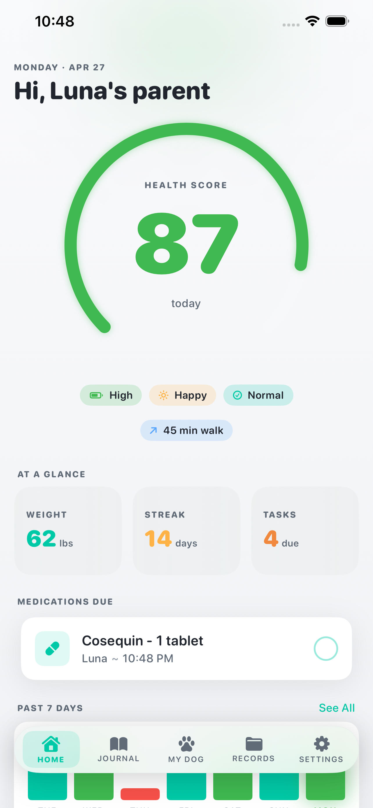
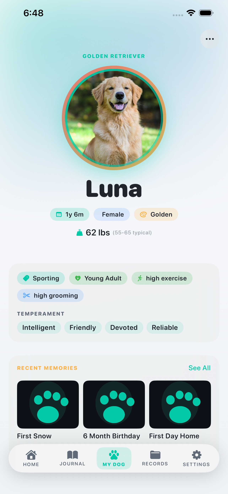
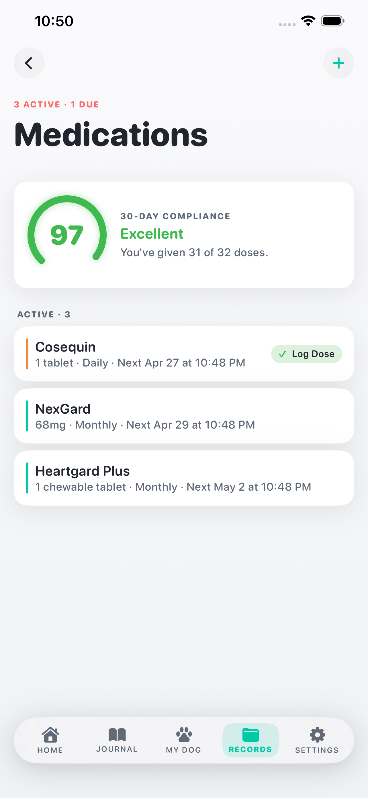
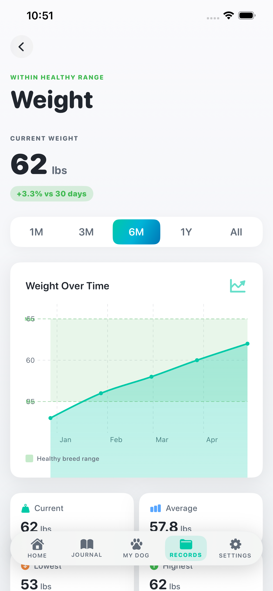
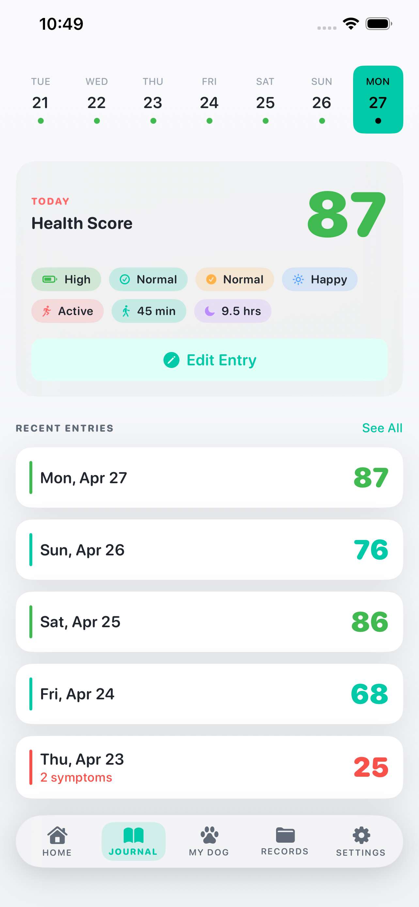
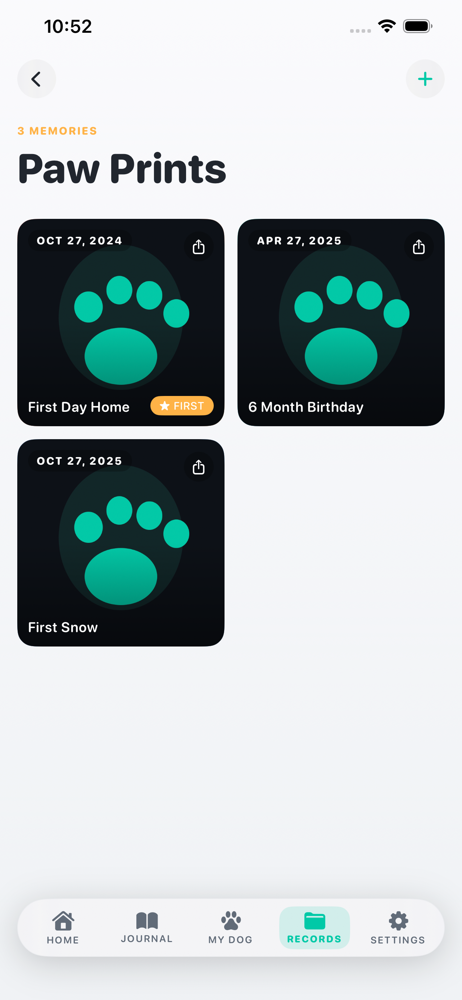

A 10-second daily check-in becomes a real Health Score. With breed-aware context for over 80 breeds, FurScore is built for dogs only — no compromise.

Most pet apps treat a Chihuahua and a Great Dane the same. FurScore adapts to your dog — their breed, their life stage, their typical weight range, their exercise needs.
Energy, mood, appetite, walks, and sleep — combined into a single 0–100 score that actually reflects how your dog is doing.
80+ breeds with typical weight ranges, life stages, exercise levels, and temperament traits — so your insights aren't generic.
Medications, vaccinations, vet visits — never miss a dose or appointment again. Compliance and protection scores keep you on track.
Weight charts plotted against your breed's typical range. See if your puppy is on track or your senior is holding steady.
Capture milestones — first day home, birthdays, first snow. A keepsake gallery alongside the data, because your dog is more than numbers.
Anonymous-first — no signup wall. All your dog's data lives on your device. Sign in only when you want sync across devices.





Every detail considered — from the typography to the way the score animates when you log a walk. FurScore feels at home on your iPhone.
The whole app adapts to your system theme. Or pin it to Light or Dark from Settings — whichever feels right at 6am.
Today's Health Score, the next medication due, and your streak — all glanceable without unlocking your phone.
Sign in with Apple or Google to keep your dog's history safe across your iPhone and iPad. Optional, encrypted, free.
Daily check-in nudges, medication reminders, and vaccination expiry alerts — all schedulable, all silenceable.
FurScore is built for dogs only — no cats, no fish, no compromises. Every screen, every metric is dog-specific.
Dynamic Type support, VoiceOver labels on every score and chart, and Reduce Motion respect throughout.
Use FurScore without ever creating an account. Your dog's data lives on your device.
If you choose to sync, data is encrypted in transit. We collect nothing for advertising — ever.
Zero third-party trackers. Zero ad networks. Zero data brokers. Read our privacy policy.
Yes — every feature, no ads, no paywall, no usage limits. No hidden "Pro" tier. We may add optional premium features in the future, but the core (daily logging, scoring, breed insights, reminders, sync) will always be free.
No. FurScore is anonymous-first — open the app and start logging. If you want to sync across devices or back up your dog's history, you can sign in with Apple or Google. Your existing entries migrate automatically.
80+ breeds out of the box including Goldens, Labs, Frenchies, German Shepherds, Poodles, Doodles, Huskies, Bulldogs, and more. Mixed-breed dogs are fully supported too — you'll still get all health tracking, just without breed-specific insights.
Completely. Every feature works without internet. Sync happens in the background when you're online (and only if you're signed in).
FurScore collects nothing for advertising — no trackers, no analytics SDKs, no data brokers. Anonymous use stores everything locally on your device. Signed-in use stores your data in our encrypted Supabase backend, accessible only to you. Read the full privacy policy.
Yes — Settings → Export Data gives you a full JSON backup of every dog, journal entry, weight, medication, vaccination, vet visit, and paw print. Take it anywhere.
Not today, no. FurScore is intentionally dog-only. Cats deserve their own purpose-built app — and we wanted to do dogs really, really well first.
We're submitting to the App Store now. Drop us your email and we'll send you the App Store link the moment we go live — nothing else, no spam.
Email us to join the listOr write directly to furscoreapp@gmail.com